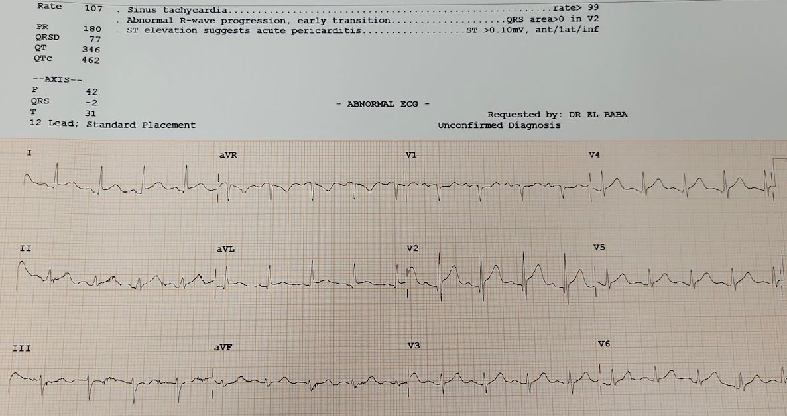
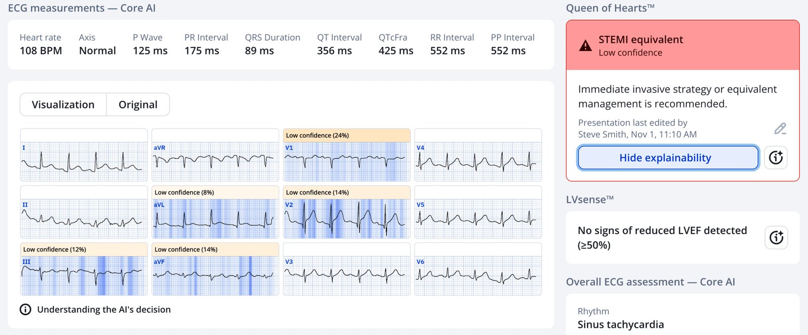
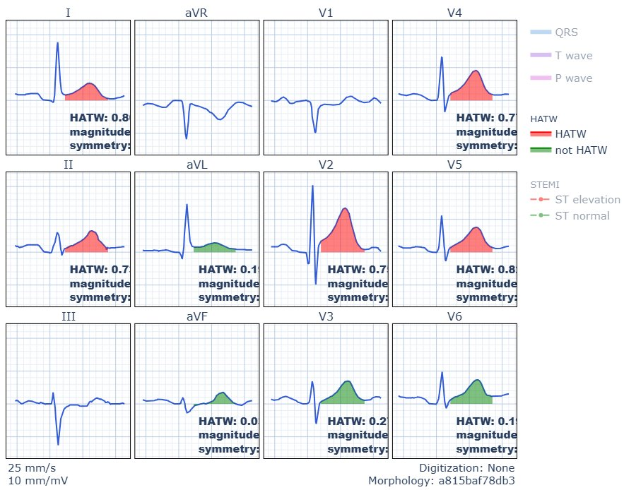
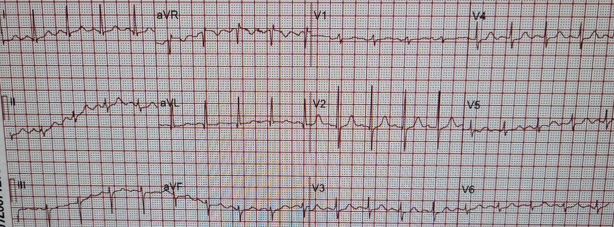
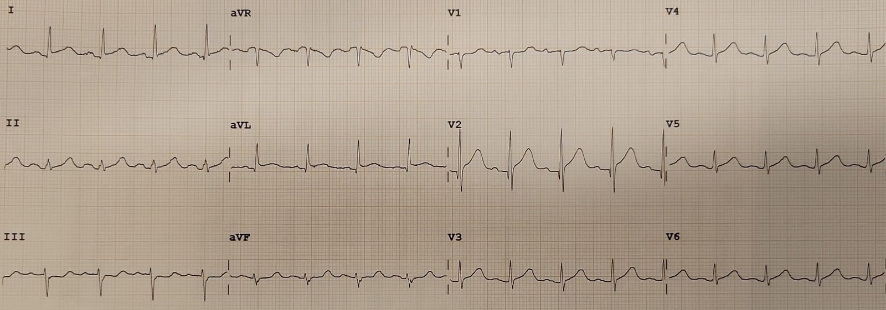
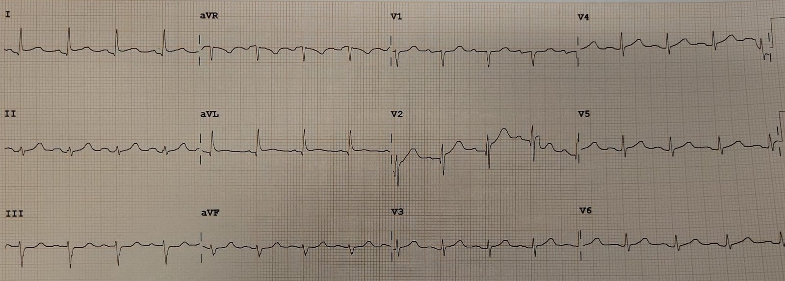
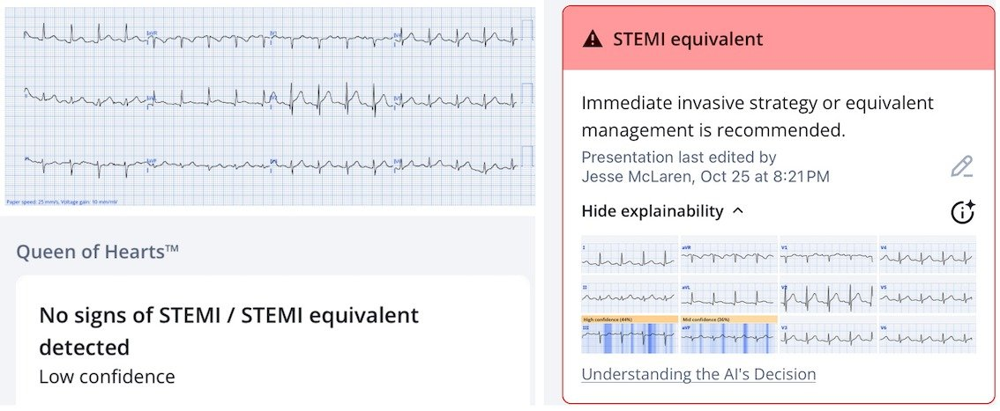
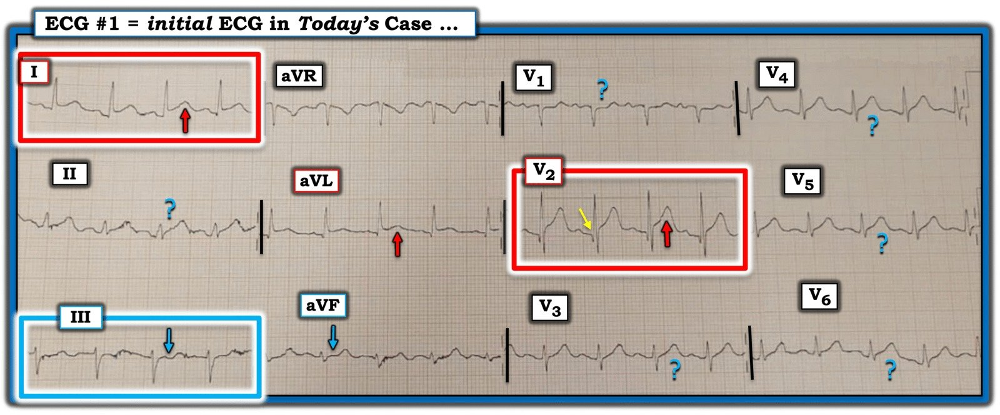

03/11/2025 — Đau ngực ở một bệnh viện vùng nông thôn: đây là viêm màng ngoài tim hay bệnh nhân cần tiêu sợi huyết?
Bản dịch tiếng Việt của bài "Chest pain in a rural hospital: is this pericarditis or does the patient need thrombolytics?" – Dr. Smith’s ECG Blog. Giữ nguyên toàn bộ 8 hình ảnh của bản gốc.
Tác giả: Mazen El-Baba, có chỉnh sửa của Jesse McLaren
Một phụ nữ 60 tuổi đến khoa cấp cứu của một bệnh viện tuyến huyện vùng nông thôn vì đau ngực kiểu bóp nghẹt, khởi phát đột ngột 20 phút trước khi đến viện. Bà mô tả cảm giác nặng ngực ở giữa ngực mức 10/10, không lan, không khó thở. Tiền sử: tăng huyết áp đang dùng perindopril. Bà đã uống hai viên aspirin ở nhà trước khi đến khoa cấp cứu (ED).
Bà được phân loại vào khu hồi sức, và điện tâm đồ đầu tiên được ghi; máy tính đọc là viêm màng ngoài tim. Bạn nghĩ sao?


Diễn giải điện tâm đồ: nhịp nhanh xoang, trục lệch trái ở mức giới hạn, sóng R tăng tiến sớm ở V2, điện thế bình thường, ST chênh lên kín đáo ở các chuyển đạo I/aVL kèm ST chênh xuống soi gương ở chuyển đạo III, và ST chênh lên kèm sóng T tối cấp ở V2 với một sóng Q nhỏ.
Tôi lo ngại ngay lập tức. ST chênh lên (STE) ở V2 và I/aVL kèm chênh xuống soi gương ở III tạo nên hình ảnh “Cờ Nam Phi” (South African flag), thường biểu hiện tắc một nhánh chéo của LAD, và không phải viêm màng ngoài tim. Chênh xuống ở chuyển đạo III tự động loại trừ chẩn đoán “viêm màng ngoài tim”. Hơn nữa, viêm màng ngoài tim hiếm khi có thay đổi soi gương khu trú hay sóng T tối cấp. Tính khu trú của các thay đổi và cơn đau kiểu thiếu máu cục bộ hướng tới OMI.
Smith: đúng vậy, hình ảnh này không chỉ chẩn đoán tắc D1 (dấu hiệu Cờ Nam Phi) mà còn chẩn đoán OMI do tắc đoạn gần LAD, vì có sóng T tối cấp kéo dài tới tận V6, và cả ở chuyển đạo II.
Queen of Hearts đồng ý (dù ở một lần tải lên khác thì không đồng ý, và khi đồng ý thì với độ tin cậy thấp – xem phần bàn luận bên dưới). Ở lần tải lên này, Queen không nhận ra sóng T tối cấp (HATW) từ V3-6:


Ở đây chúng tôi áp dụng phân tích định lượng sóng T tối cấp của chúng tôi:


Màu đỏ là HATW, và phải có 2 sóng T liên tiếp đạt điểm trung bình 0.7 (kết hợp điểm “độ lớn”, phản ánh tỷ lệ AUC/biên độ QRS, và điểm đối xứng. Có thể thấy hai chuyển đạo liên tiếp (V4-5) có điểm 0.7 và 0.8. Do đó, hệ thống của chúng tôi có chỉ ra sóng T tối cấp, với độ đặc hiệu 98%.
Có trôi đường nền nhẹ ở các chuyển đạo chi của điện tâm đồ thứ 1, có thể ảnh hưởng tới những thay đổi kín đáo nêu trên — vì vậy điện tâm đồ thứ 1 được ghi lại ngay và so sánh với điện tâm đồ nền. Dưới đây là một điện tâm đồ từ vài năm trước (bản ghi trên) — rồi đến điện tâm đồ ghi lại vào ngày đau ngực (bản ghi dưới). Có được điện tâm đồ cũ này giúp xác nhận vùng chuyển tiếp sóng R sớm là cũ, và không chỉ hình ảnh Cờ Nam Phi là mới — mà nay còn thấy sóng T tối cấp khắp các chuyển đạo trước tim. Vì thế giờ đây trông giống tắc đoạn gần LAD (dù máy tính vẫn tiếp tục ghi nhãn là ‘viêm màng ngoài tim’):




Điều chỉnh xác suất tiền nghiệm
Các quyết định trong cấp cứu và tim mạch không nên mang tính nhị phân (“STEMI hay không STEMI”). Chúng mang tính Bayes: ta bắt đầu với một xác suất tiền nghiệm (pre-test probability) dựa trên bệnh sử và các yếu tố nguy cơ, rồi liên tục cập nhật khi thu thập thêm thông tin.
Phân tích Bayes đối với ACS và điện tâm đồ được trình bày trong công bố này của Jose de Alencar và Smith (toàn văn miễn phí): Bayesian Diagnosis of Occlusion Myocardial Infarction: A Case-Based Clinical Analysis (Chẩn đoán Bayes nhồi máu cơ tim do tắc: phân tích lâm sàng dựa trên ca bệnh)
Trong ca này:
- Bệnh sử: đau kiểu đè ép, đột ngột, đang tiếp diễn → xác suất tiền nghiệm cao
- Điện tâm đồ: thay đổi soi gương kín đáo và sóng T tối cấp → xác suất tăng.
Để thu thập thêm thông tin nhằm cập nhật xác suất tiền nghiệm, tôi đã làm siêu âm tim tại giường.
- Siêu âm tim tại giường: giảm động khu trú thành trước → xác suất tăng rõ rệt.
Mỗi bước đều nâng xác suất lên, chuyển hướng xử trí từ “loại trừ” sang “điều trị cho tới khi chứng minh được điều ngược lại.”
Điều này đặc biệt quan trọng ở vùng nông thôn, nơi điều trị OMI là tiêu sợi huyết. Máy điện tâm đồ ghi nhãn viêm màng ngoài tim, còn bệnh sử đau ngực đột ngột mức 10/10 làm dấy lên khả năng bóc tách động mạch chủ — cả hai đều là chống chỉ định của tiêu sợi huyết. Nhưng các dấu hiệu trên điện tâm đồ và siêu âm tại giường (POCUS) đã loại trừ viêm màng ngoài tim, và OMI rất khó là thứ phát do bóc tách động mạch chủ.
Lập luận lâm sàng và xử trí
Do ở vùng xa xôi, việc chuyển tới một trung tâm có khả năng PCI sẽ cần thời gian. POCUS tại giường đã được thực hiện để thu hẹp sự không chắc chắn trong chẩn đoán, và xác nhận giảm động thành trước, phù hợp với thiếu máu cục bộ vùng chi phối của LAD.
Tôi liên hệ bác sĩ tim mạch can thiệp của khu vực và gửi điện tâm đồ. Ban đầu, khuyến nghị là dùng heparin và chờ chuyển viện bằng đường hàng không, nhưng sau khi xem điện tâm đồ và video siêu âm tim tại giường, bác sĩ can thiệp đồng ý rằng các dấu hiệu rất nghi ngờ tắc LAD và đồng ý cho tiêu sợi huyết.
Do dự kiến chậm trễ tới PCI, Tenecteplase (TNK) đã được dùng. Bệnh nhân được dùng trước clopidogrel và heparin trọng lượng phân tử thấp (LMWH) theo phác đồ chống đông. Ngay trước khi bắt đầu tái tưới máu bằng TNK, kết quả troponin độ nhạy cao ban đầu trả về 600 ng/L, càng củng cố rằng đây là nhồi máu cấp, không phải viêm màng ngoài tim.
Kết cục
Ba mươi phút sau TNK, cơn đau ngực của bệnh nhân hết hoàn toàn. Điện tâm đồ ghi lại cho thấy các thay đổi đã cải thiện:


Sau đó bà được chuyển bằng máy bay tới phòng thông tim, và bác sĩ tim mạch can thiệp tiếp nhận nhắn tin cho biết điện tâm đồ đã bình thường hóa hoàn toàn khi tới cơ sở của họ. Ngày hôm sau, chụp mạch vành cho thấy một tổn thương rất khít ở đoạn gần LAD với dòng chảy TIMI III, và đã được đặt stent. Bà hồi phục tốt và xuất viện vài ngày sau đó.
Bàn luận
Ca này minh họa một số nguyên tắc then chốt, trung tâm của khung tư duy OMI và việc ra quyết định dựa trên điện tâm đồ.
Tiêu chuẩn STEMI kém nhạy
Các ngưỡng STEMI truyền thống chưa bao giờ được thiết kế để phát hiện mọi trường hợp tắc cấp. Nhiều OMI tạo ra thay đổi ST kín đáo hoặc theo vùng, nằm dưới các ngưỡng này. Mục tiêu không phải là chờ một “STEMI” xuất hiện (điều có thể không bao giờ xảy ra), mà là nhận ra khi nào bối cảnh lâm sàng và điện tâm đồ kết hợp lại khiến khả năng tắc là áp đảo.
Viêm màng ngoài tim: chẩn đoán loại trừ
Viêm màng ngoài tim điển hình gây STE lan tỏa, dạng lõm, ở nhiều vùng, kèm đoạn PR chênh xuống và không có ST chênh xuống (STD) soi gương (trừ aVR). Đây cũng là một chẩn đoán lâm sàng, đòi hỏi 2/4 tiêu chuẩn sau: tiêu chuẩn điện tâm đồ, bệnh sử gợi ý, tràn dịch màng ngoài tim trên siêu âm tim, và tiếng cọ khi nghe tim. Ngược lại, OMI có tính khu trú, đặc hiệu theo vùng chi phối, và thường không đối xứng, như trong ca này, khi STE ở I/aVL/V2 được cân bằng bởi STD ở III. Khi có thay đổi soi gương, đặc biệt ở các chuyển đạo dưới, viêm màng ngoài tim trở nên rất ít khả năng. Ngoài ra, phần lớn viêm màng ngoài tim là vô căn và cải thiện với NSAID, vì vậy nó nên là một chẩn đoán loại trừ.
Xác suất tiền nghiệm là động, không tĩnh
Độ tin cậy chẩn đoán nên thay đổi theo mỗi bằng chứng mới. Lúc đầu, chẩn đoán phân biệt có thể gồm bóc tách động mạch chủ, SCAD, viêm màng ngoài tim, hoặc OMI. Nhưng một bệnh sử nhất quán, thay đổi soi gương kín đáo và rối loạn vận động thành cùng nhau nâng xác suất OMI đủ cao để việc chờ đợi trở nên nguy hiểm hơn việc điều trị. Quá trình cập nhật theo Bayes này là xương sống của việc ra quyết định trong cấp cứu. Khi còn sự không chắc chắn, hãy thu thập thêm dữ liệu; không phải để trì hoãn, mà để làm rõ ngưỡng hành động của bạn: các điện tâm đồ liên tiếp, thăm khám lại, siêu âm tim, +/- troponin sớm đều là công cụ để điều chỉnh động xác suất tiền nghiệm theo thời gian thực.
POCUS như một công cụ điều chỉnh xác suất
Một rối loạn vận động thành khu trú (RWMA) làm tăng mạnh tỷ số khả dĩ đối với OMI. Siêu âm tim không thay thế điện tâm đồ; nó bổ sung cho điện tâm đồ. Ở vùng nông thôn, siêu âm tim tại giường có thể tạo nên khác biệt giữa sự do dự và quyết định tái tưới máu dứt khoát.
Troponin để xác nhận, không phải để kích hoạt
Động học troponin chậm hơn các thay đổi trên điện tâm đồ. Tuy nhiên, trong ca này, giá trị ban đầu tăng rất cao (600 ng/L) đã củng cố thêm chẩn đoán OMI. Mẫu được lấy khi bệnh nhân đang được dùng TNK; đừng chờ troponin ban đầu nếu xác suất tiền nghiệm của bạn đủ cao, vì kết quả có thể âm tính giả. Quyết định tiêu sợi huyết được đưa ra dựa trên lâm sàng + điện tâm đồ + siêu âm tim; troponin chỉ củng cố điều đã rõ ràng, và lẽ ra không làm thay đổi xử trí ngay cả khi nó bình thường.
Tiêu sợi huyết vẫn cứu sống người bệnh trong bối cảnh phù hợp
Tiêu sợi huyết không phải không có nguy cơ thực sự. Khi chẩn đoán chắc chắn và dự kiến chậm trễ PCI, không nên coi tiêu sợi huyết là biện pháp cuối cùng, mà là một can thiệp dựa trên bằng chứng giúp phục hồi dòng chảy và cứu cơ tim. Việc quyết định tiêu sợi huyết vẫn phải tuân theo phác đồ chuẩn, đồng thời cân nhắc các chống chỉ định tuyệt đối và mục tiêu chăm sóc của bệnh nhân. Việc bệnh nhân hết đau nhanh và điện tâm đồ bình thường hóa chứng tỏ tái tưới máu thành công.
AI là công cụ quan trọng, nhưng không thay thế cho các quyết định lâm sàng
Queen of Hearts không phát hiện OMI (với độ tin cậy thấp) trên điện tâm đồ đầu tiên có đường nền trôi.
Smith: mỗi lần tôi đưa ảnh qua Queen, nó đều cho kết quả OMI với độ tin cậy thấp. Bất kỳ thay đổi nhỏ nào của ảnh (cắt ảnh, cắt bỏ hoặc giữ dải nhịp, góc chụp, v.v.) đều có thể dẫn tới những thay đổi nhỏ ở kết quả đầu ra (tôi thu được các giá trị này bằng các cách khác nhau trên điện tâm đồ này, và kết quả là 0.46, .0.56, 0.57, 0.58, và 0.76. Giá trị trên 0.50 cho kết quả OMI. 0.50-0.67 là độ tin cậy thấp)
Nếu việc ra quyết định lâm sàng chỉ dựa vào kết quả đọc AI đầu tiên thì ca này có thể đã bị bỏ sót. Nhưng tôi lo ngại về một hình ảnh Cờ Nam Phi kín đáo trong bối cảnh khả năng tiền nghiệm lâm sàng cao, đặc biệt khi so sánh với điện tâm đồ cũ và có dấu hiệu POCUS tương ứng, cùng một điện tâm đồ ghi lại cho thấy thay đổi soi gương rõ hơn (được Queen of Hearts nhận ra trên điện tâm đồ thứ hai). OMI không được định nghĩa bởi điện tâm đồ, và AI không thay thế lập luận Bayes; mô hình OMI cung cấp một cách tiếp cận lâm sàng bao gồm khả năng tiền nghiệm, đọc điện tâm đồ nâng cao và đọc bằng AI, và POCUS.


Các điểm then chốt lâm sàng (Clinical Pearls):
- Đừng tin máy
Kết quả đọc tự động “viêm màng ngoài tim” thường gặp trong OMI kín đáo. Luôn đọc trong bối cảnh, và nhớ rằng viêm màng ngoài tim là một chẩn đoán loại trừ. - Liên tục tính lại xác suất
Bệnh sử, các điện tâm đồ liên tiếp, siêu âm tim, +/- troponin: mỗi dữ kiện đều tinh chỉnh độ chắc chắn và ngưỡng hành động của bạn - Hành động dựa trên tổng hợp, không dựa vào một xét nghiệm
Lập luận lâm sàng mang tính Bayes. Khi mọi mũi tên đều chỉ về phía tắc mạch, việc chờ STEMI kinh điển hay troponin tăng chỉ làm chậm trễ việc điều trị.
= = =
======================================
BÌNH LUẬN CỦA TÔI, bởi KEN GRAUER, MD (3/11/2025):
Bài điểm lại tuyệt vời của BS. El-Baba và BS. McLaren về mọi lý do vì sao bệnh nhân hôm nay không bị viêm màng ngoài tim — mà thay vào đó là tắc LAD cấp, may mắn đã được nhận ra kịp thời và điều trị tối ưu.
- Tôi tập trung bình luận của mình vào điểm quyết định ban đầu MẤU CHỐT — đó là việc đọc điện tâm đồ ban đầu.
===
Điện tâm đồ ban đầu đã đủ để chẩn đoán!
Để rõ ràng, trong Hình 1 — tôi đã sao chép lại và ghi chú điện tâm đồ ban đầu của ca hôm nay. Cũng như BS. El-Baba và BS. McLaren — tôi lo ngại ngay khi nhìn thấy điện tâm đồ #1. Dù việc tìm điện tâm đồ nền (từ vài năm trước) của bệnh nhân và điện tâm đồ ghi lại (ghi ngay sau điện tâm đồ #1) đã giúp xác nhận tắc LAD — tôi nghĩ cần nhấn mạnh rằng ngay lập tức khi nhìn thấy điện tâm đồ #1 ở người phụ nữ 60 tuổi này với CP (đau ngực) 10/10 mới khởi phát — đã có thể đưa ra chẩn đoán OMI cấp cho tới khi chứng minh được điều ngược lại.
- “Con mắt” của tôi lập tức bị hút về chuyển đạo V2 (trong hình chữ nhật MÀU ĐỎ ở Hình 1). Đặc biệt khi có gợi ý một sóng r rất nhỏ ở chuyển đạo V1 — việc thấy sóng Q ở chuyển đạo V2 là không “bình thường”. Ở bệnh nhân có CP mới này — vì vậy tôi diễn giải sóng ST-T ở chuyển đạo V2 là tối cấp cho tới khi chứng minh được điều ngược lại (Sóng T cao hơn và “đầy đặn” hơn ở đỉnh, cũng như rộng hơn ở đáy so với dự kiến).
- Với tôi — sự xác nhận tính tối cấp của sóng T ở chuyển đạo V2 đến từ ST chênh lên kín đáo-nhưng-có-thật ở các chuyển đạo I và aVL (Dù có trôi đường nền ở chuyển đạo I — việc điểm J chênh lên ở cả 4 phức bộ QRST trong chuyển đạo này cho ta biết ST chênh lên này là thật — đặc biệt khi có ST chênh lên với đường nền thẳng ở chuyển đạo bên cao lân cận I).
- ST chênh lên ở chuyển đạo bên cao và ST chênh xuống soi gương ở chuyển đạo dưới có xu hướng gặp chủ yếu trong tắc đoạn gần LAD. Vì vậy, bất chấp nhiễu ở các chuyển đạo III và aVF — tôi diễn giải ST thẳng đuỗn không thể nhầm lẫn kèm chênh xuống nhẹ ở 2 chuyển đạo này là đủ “bằng chứng hỗ trợ cuối cùng” ở bệnh nhân có CP 10/10 mới này để biện minh cho thông tim kịp thời, hoặc trong ca hôm nay là tiêu sợi huyết kịp thời.
- Tôi cho rằng mỗi chuyển đạo trong số 6 chuyển đạo mà tôi thêm dấu hỏi ở Hình 1 — biểu hiện các thay đổi ST-T kém tin cậy hơn nhưng vẫn đáng ngờ (tức là sóng T “đồ sộ” không tương xứng — hoặc ST thẳng đuỗn hay chênh xuống). Gộp lại — tôi cho rằng 11/12 chuyển đạo trên điện tâm đồ ban đầu này ở bệnh nhân có CP 10/10 hoặc là đáng ngờ, hoặc là bất thường rõ.
- T.B. (P.S.): Nhịp ở điện tâm đồ #1 là nhịp nhanh xoang tần số 105-110/phút. Điều này làm ta lo ngại thêm — vì OMI cấp không biến chứng thường không kèm nhịp nhanh trừ khi nhồi máu rộng và/hoặc có suy tim hay “điều gì khác” đang diễn ra.
= = =
Hình 1: Tôi đã ghi chú điện tâm đồ ban đầu trong ca hôm nay.


= = =
= = =